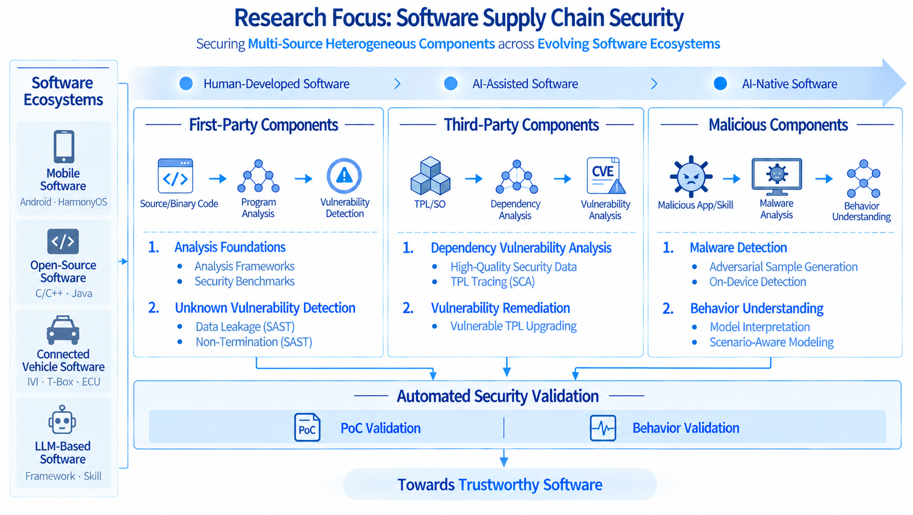

Sen Chen
Professor, College of Cryptology and Cyber Science, Nankai University, China

About
I am a full professor at Nankai University and lead NKSSecLab. I am also a member of the research group led by Prof. Zheli Liu. I was an assistant professor at Nanyang Technological University, Singapore, working with Prof. Yang Liu.
My research focuses on software security and software supply chain security, focusing on code and dependencies to build trustworthy software. I have received the ACM SIGSOFT Early Career Researcher Award in 2026 and 7 Distinguished Paper Awards at top-tier conferences.
Research
- Software Supply Chain Security
- Trustworthy Software
- Software Composition Analysis (SCA)
- Static Analysis and Security Testing (SAST)
- Vulnerability, PoC, Malware
- LLM-based Software Security
News

March 2026: Received one Distinguished Paper Award (ICSE 2026).
December 2025: Received the ACM SIGSOFT Early Career Researcher Award (2026) for outstanding contributions to advancing software supply chain security through pioneering techniques and tools in Software Composition Analysis (SCA) and Static Application Security Testing (SAST).
July 2025: One paper accepted at CCS 2025.
Preprints
Selected Publications
- ICSE 2026 [SAST & SCA] Towards Understanding and Characterizing Vulnerabilities in Intelligent Connected Vehicles through Real-World Exploits
- CCS 2025 [Malware] ForeDroid: Scenario-Aware Analysis for Malware Detection and Explanation
- TOSEM 2025 [Malware] Malware Description Generation through Profiling Malicious Behavior Trajectory
- FSE 2024 [SAST] Static Application Security Testing (SAST) Tools for Smart Contracts
- TSE 2023 [SAST] Automatically Distilling Storyboard with Rich Features for Apps
- ASE 2023 [SAST] EndWatch: A Practical Method for Detecting Non-Termination in Real-World Software
- ICSE 2023 [SCA] Compatible Remediation on Vulnerabilities from Third-Party Libraries
- ICSE 2022 [SCA] Demystifying the Vulnerability Propagation and Its Evolution in the NPM Ecosystem
- TOSEM 2020 [Malware] Why an App is Classified as Malware? Towards Malware Classification Interpretation
- TIFS 2022 [Malware] A Performance-Sensitive Malware Detection System Using Deep Learning on Mobile Devices
- TDSC 2021 [Malware] GUI-Squatting Attack: Automated Generation of Phishing Apps
- ICSE 2020 [SAST] An Empirical Assessment of Security Risks of Global Android Banking Apps
Awards
- ACM SIGSOFT Early Career Researcher Award, 2026
- Distinguished Paper Award (ICSE 2026)
- Stanford World’s Top 2% Scientists, 2025
- CAIE Young Talent Promotion Program, 2025
- National Cybersecurity Outstanding Talent, 2024
- Distinguished Paper Award (FSE 2024)
- Distinguished Paper Award (ASE 2023)
- Distinguished Paper Award (ICSE 2023)
- Rising Star Award (ACM China Council Tianjin Chapter), 2022
- Distinguished Paper Award (ASE 2022)
- Distinguished Paper Award (ICSE 2021)
- Distinguished Paper Award (ICSE 2018)
Service
- 2027 Program Committee: USENIX Security, ICSE
- 2026 Program Committee: USENIX Security
- 2025 Program Committee: USENIX Security, IEEE S&P, CCS, ISSTA, OOPSLA
- 2024 Program Committee: USENIX Security, IEEE S&P, CCS, ISSTA, OOPSLA
- 2023 Program Committee: FSE, ASE
- 2022 Program Committee: ASE